The Define Epi page is brought up by clicking on “Configuration (EPP)” in the Spectrum Incidence menu. On this page you have two primary goals: 1) to select the epidemic type, either generalized or concentrated; and 2) to build your national epidemic from a set of regional and/or sub-population epidemics.
On calling up the Define Epi page for the first time, you must select the epidemic type, either generalized or concentrated. This is done with the radio buttons in the red box in the figure below next to the words “Epidemic type”.
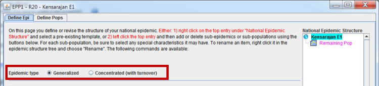
In EPP the only distinction between generalized and concentrated epidemics is that concentrated epidemics allow for turnover. That is, people are allowed to move between sub-populations. Should you select generalized as the epidemic type, then each of your sub-populations will be treated as a completely separate population of 15 to 49 year olds.
You only need to select this value once. After you hit the Save and Continue button in green at the right hand bottom of the page, this value will be saved. The next time you open this projection you will only see the selection previously made, as shown below. It is important to note that this cannot be changed after a projection is saved, so be sure to set it properly before hitting Save and Continue.
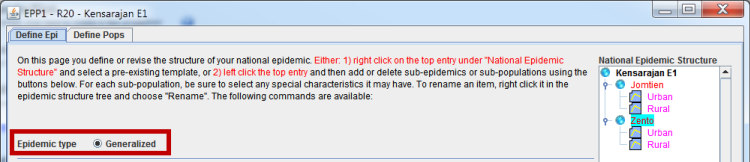
Before you start building your national epidemic, we need to discuss the difference between a sub-epidemic and a sub-population in EPP.
A sub-epidemic is a container like a folder in Windows and a sub-population is like a file. Just as a Windows folder can hold other folders and files, the sub-epidemic can hold both other sub-epidemics and the sub-populations where the real calculation work in EPP is done.
On the right-hand side of the Define Epidemics Page is a panel labeled "National epidemic structure". This shows you what the national epidemic in your country looks like. The panel contains a tree that shows you the epidemic structure. This tree has three types of entries, shown below:
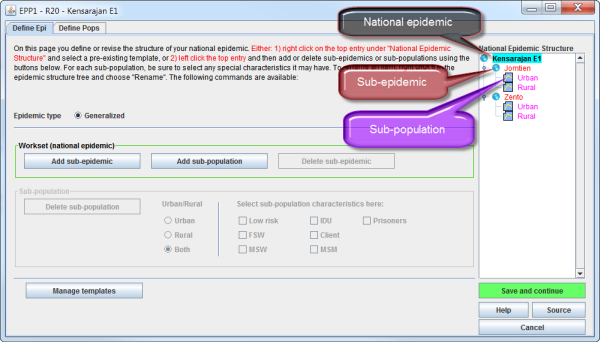
By clicking on the items in this tree, you can add and delete sub-epidemics and sub-populations using the add and delete buttons in the panels labeled “Workset (national epidemic)” and “Sub-population” in the middle of the page. Only those buttons which can be used on the current item selected in the tree are active, while the others are grayed out to show they are unavailable.
If a sub-population has not yet been fit, the text describing it in the National Epidemic Structure tree will be colored purple. In the figure above, none of the sub-populations has been fit. If an epidemic has been fit, then the text will change from purple to dark blue.
The most common patterns of epidemics are available as templates. A template is a predefined set of sub-populations that describes a commonly occurring epidemic pattern. You can see the template list by right clicking either the name of the national epidemic or the name of a sub-epidemic in the National Epidemic Structure tree. This will bring up the template menu shown in the red box below and shown in expanded form below the figure.
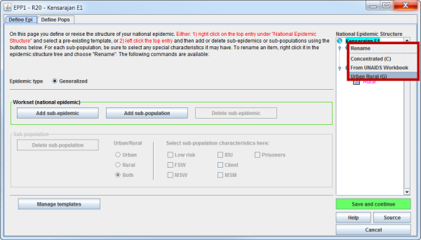
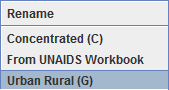
The top entry in the template menu is entitled Rename. This allows you to rename either a sub-epidemic or a sub-population. If you click on Rename in this menu, you'll be asked for the new name you wish to apply and the name will then be changed in your National Epidemic Structure. Please note that you cannot rename your national epidemic.
The entries below the horizontal line are a list of the templates which are available. By default when you start EPP, there will be three templates:
You can also define your own special templates by clicking the Manage Templates button in the lower left-hand side of the Define Epi page.
Templates can be applied to either the national epidemic or to a sub-epidemic. They cannot be applied to a sub-population. To use a template: 1) right-click on the national epidemic name or the sub-epidemic name; 2) move the mouse to select the template you wish to use; and 3) click on the template name. The sub-populations in the template will now be added to your national epidemic or sub-epidemic.
One of the most common epidemic patterns used in EPP is to have one urban sub-population and one rural sub-population, which is defined in the Urban Rural (G) template. This is used in many sub-Saharan African countries.
To create a generalized epidemic of this type:
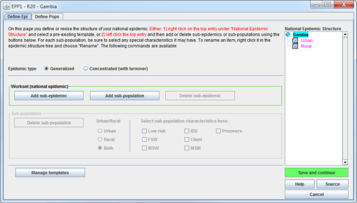
An increasingly common choice in generalized epidemics is to build the national epidemic out of regional sub-populations. This is done by creating a separate sub-population for each region of the country. To build a national epidemic from regional sub-populations:
Continue this process until you have added as many regions as desired. The result of this procedure is shown below with four regions and the Remaining population:
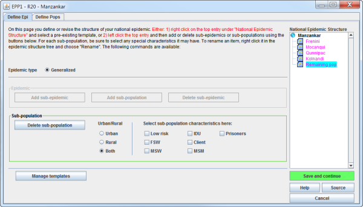
If you wish to remove the “Remaining pop” entry because all of your population is already included in the regions entered, use the following procedure:
This will remove the Remaining pop sub-population. When done click Save and continue to move on to the Define Pops page.
To build a concentrated national epidemic, you have two options:
The steps to use the concentrated template are identical to those to use the generalized template:
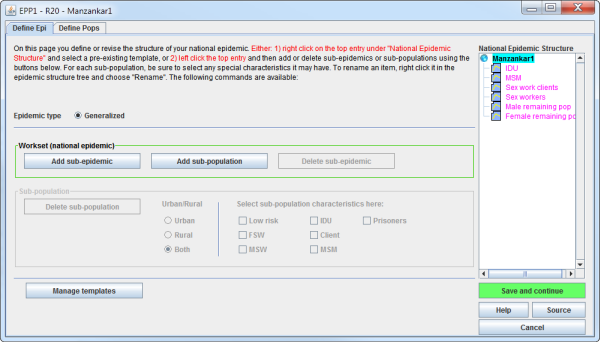
This will give you the six default populations defined in the concentrated epidemic template. If you click on one of these sub-populations, e.g., MSM, you will see some of the boxes under “Select sub-population characteristics here” selected with check marks. If you use the template, these characteristics are set automatically for you; however, if you decide to build your own epidemic, you will need to set these characteristics manually by clicking the box next to the characteristic to be applied.
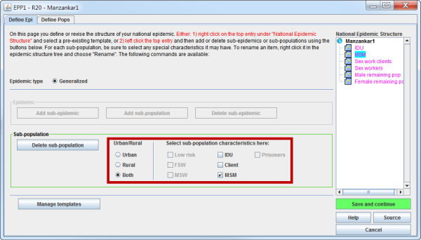
The special characteristics available are:
You can select combinations of these factors if desired, e.g., rural MSM who inject drugs. Note that not all combinations are possible, e.g., you cannot have a group of female sex workers who are also clients. When one of the higher risk population characteristics is selected with implications for the proportion of the population which is male, the value is automatically adjusted. For example, MSM will be set to all male and FSW to all female. For people who inject drugs a default value of 90% male is used, but you can change this on the Define Pops page.
At present, these characteristics are not used within EPP or Spectrum; however, as tools for examining modes of transmission are improved in the future, they may draw upon these characteristics. Thus, when creating your own epidemics you should set these characteristics appropriately for each sub-population.
Your final option is to build your own epidemic using some combination of sub-epidemics, sub-populations and templates. This can be done for either generalized or concentrated epidemics, although it is probably more common in concentrated epidemics where multiple sub-populations with higher risk may contribute to the epidemic even at the regional or provincial level.
Suppose we wish to build five regional sub-epidemics for Thailand, each of which contains the key populations with higher risk from the concentrated template. We start by creating each of the regional sub-epidemics:
A small window will pop up asking you to name the new sub-epidemic as shown below.
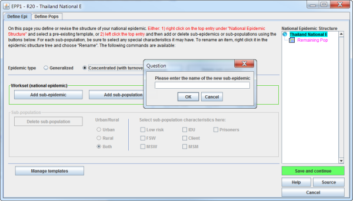
Your national structure will now appear as below:
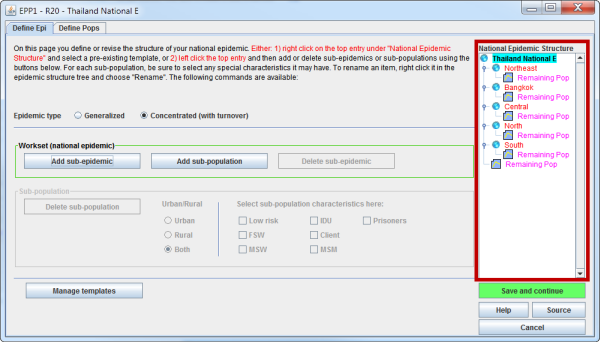
Your screen will now look as below. Note that the entire concentrated template has been added to the Northeast and that you are about to do the same for Bangkok.
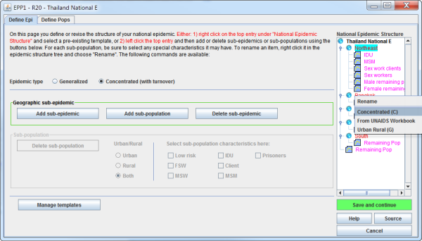
You will now have a completely populated set of regional concentrated sub-epidemics for each of the five regions of Thailand as shown here.
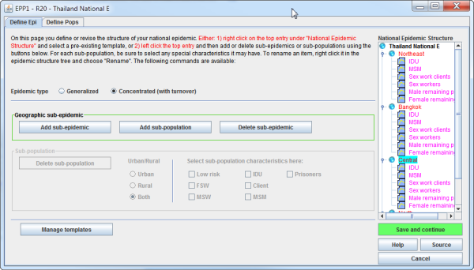
To finish your work, click Save and Continue and you will automatically move onto the Define Pops page after confirming that you have properly set any sub-population characteristics that are needed.